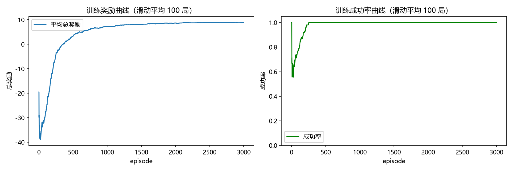
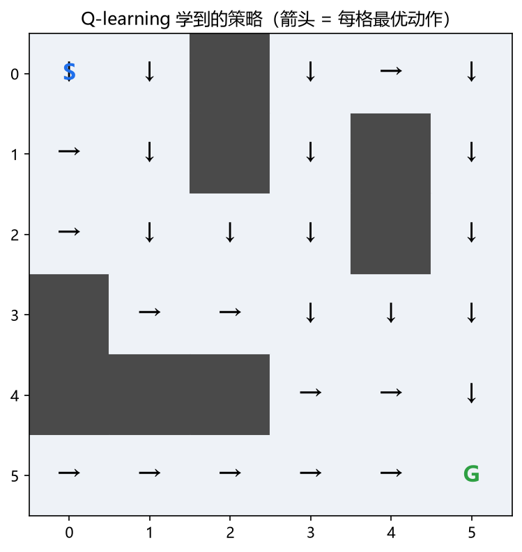
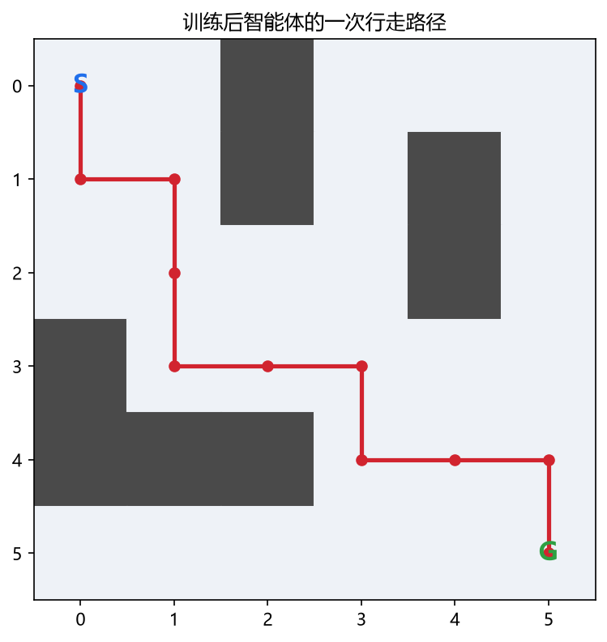

从零实现
环境与 Q-learning 算法均为手写，代码带详细中文注释。
ABOUT
不依赖任何深度学习框架，环境、算法、训练、评估全部手写，把强化学习的每个概念拆开看明白。
环境与 Q-learning 算法均为手写，代码带详细中文注释。
浏览器里实时调参、单步观察每次 Q 更新的数值变化。
固定随机种子，自动化测试覆盖环境规则与更新公式。
策略箭头、行走路径、训练曲线，学习过程一目了然。
PRINCIPLE
state 是格子坐标 (row, col)，action 是上下左右四向；到达终点 +10，撞墙 -1，普通移动 -0.1。
epsilon 从 1.0 衰减到 0.05：前期随机探索发现终点，后期选择 Q 值最大的动作稳定收敛。
Q(s,a) ← Q(s,a) + α × ( r + γ × max Q(s′,a′) − Q(s,a) )
目标值比旧估计更接近真实回报，α 控制每次修正幅度，γ 给未来奖励打折。
RESULTS



贪心评估 100 局：成功率 100%，平均 10 步；随机策略对照仅为 50%、平均 120.8 步。
STACK
env.pyagent.pytrain.pyevaluate.py
visualize.pyexperiments.pytests.pydemo.html